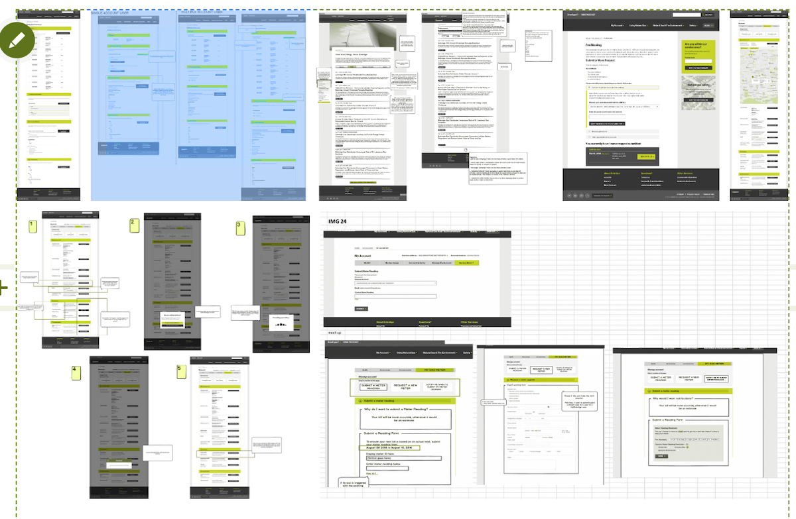

User Experience Designer & UX Analyst
Re-designing the outdated customer web app experience for a large North American gas/utilities company, which serves over 1.9 million customers. The work was extensive, laying the ground work for future iterations.
Envisioning and designing what the current customer-facing website experience and appearance can be transformed into as a Sitecore site - considering feasibility and limitations of backend infrastructure.
My focus on this project was on the redesign of the customer-facing Sitecore website (2.0), while at the time, the initial website I previously worked on was on the verge of being launched (1.0).
The project was very vague at first - the work order was ambiguous on what was to be delivered, artifacts were outdated, and every aspect of the customer experience was being transformed.
Analysis, interviews, and design workshops would all help inform the improvements we needed to design for. Prioritizing experiences to discover which were key to the client would then lead the path of what should be designed first. From those top prioties, we were to design the happy and unahppy paths and showcase them through flows, documents, wireframes, and prototypes, and deliver technically feasible designs.
I started by getting familiarized with the project through reports, personas, and user journeys. These artifacts gave me insight into who the target users were, their needs, and how they performed tasks. With this, there were still holes as to what the requirements were and the priority for upcoming sprints. To solve this, client meetings, deep dives, and team inquiries were used to gather more information.
My process always began with finding out what the feature was, if it was already existing or if enhancements needed to be made, gathering information and creating idea boards.
With this particular project I was digitally and physically running around looking for documentation which no one was able to find me. I went hunting until I finally found some resources... which ended up being outdated. This was due to constantly changing requirements, team members, also because the client operated on a completely waterfall model prior to the project. Working with what I got, I heavily relied on meetings and workshops with stakeholders, a ton of emails, and finding the answers to questions I needed.
After a series of workshops with the client, requirements were gathered, user stories made, and prioritization was finalized. Thanks to t-shirt sizing activities, 42 features were prioritized and we got to working through as much as we could until phase deadline in May.
Workshops were the client's favorite part of this project. They were fun, interactive, generated good conversations, and the results gave a sense of direction to all stakeholders. The only issue in the world of back to back meetings was that time was very limited. To get the most out of meetings and workshops, a clear objective and agenda had to be made prior, time needed to be watched, and items had to be prioritized incase a stakeholder had to leave early or if time ran out. If one question wasn't answered or our meeting goal wasn't achieved, it could mean roadblocks.
From there, our team designed an optimized user experience delivered through information architecture, use cases and scenarios, flow/logic diagrams to describe design based on user interaction, and wireframes made on Sketch. Among 42 identified and prioritized features, 17 were designed for within the span of four months.
 Balsamiq was a quick and easy way to generate designs and note ideas during workshops and prior to creating medium and high fidelity designs.With such a large backlog, it was not only the work of myself, my team lead, and our visual designer, but required some help from an interaction designer, a researcher, and an additional visual designer to conduct a few supplementary interaction design workshops, gather testing feedback from new users, and provide some concepts for a visual design strategy. Myself and the core UX team was fortunate that we had relly good synergy and high organization. I helped run our meetings and workshops, our team lead took on meetings that didn't require us so that we could get hands down time, and I ensured we got through everything we needed to keep on track.
So there were two projects happening: 1. Recreating the current site as a Sitecore Content Management System (CMS) implementation, reskinned with zero feature updates and a few new content pages. 2. A newer version of the site with new flows, processes, and basically a whole new experience (what I've been working on in this project up to this point).
At this point, the migration had been underway for about 9 months, and it was ready for client review for missing content and validation to ensure the entire site of 200+ pages had been implemented as expected. As we were desigining a future state (the latter project), help was urgently needed for first project. Of the three members on my team, I was the only UX resource who could be pulled for two weeks, so I put my efforts on the envisionoing on pause to help with the migration.
The basis of this migration process was not automated as entirely new content was required, so all content was manually entered into the Sitecore editor. A big surprise that was made apparent as we reviewed the site and as development work was almost complete, was that the visual design of the site did not meet the expectations of the client. As this unfolded it changed everything.
Before bringing this up to higher ups, I went through a few pages with the client to quickly see if all pages had issues. I also went to see what visual design documentation the developers were working off of, and held a few meetings to understand the behaviour and limitations of how the components were built out. From this, it was clear that there was not enough design documentation provided to developers earlier i the process, and a simple "do what you need to do" email allowed the developers to make up specifications which effected every single one of the 200+ pages.
I brought this to the attention of the project and program managers, outlining the issue and it's impact on the project. After a triage meeting and discussions with the client, I was told my expertise was required to manage user interface and user experience (UI/UX) issues and to offer guidance to offshore teams of what to do to make fixes, log tickets to fix UI issues, create any required design assets for offshore to implement, and spend extra time with the client to identify issues and strategize how they would be fixed. The content migration took * weeks * of daily client meetings and working on weekends in order to plan and then delegate tasks to the offshore development team.
With missing design requirements and gaps between visual expectations and real implemention, I played a crucial role in keeping the relationship with the client in tact, and doing my best of part to meet launch date as close as possible. To keep ontop of it all I really needed clear communication between all the key people (client and developers), and to manage my time and any details (Jira saves lives).
One method I used daily to help quicken the process was open Google Chrome's inspector with the page or component I'd like looked at on the test environment. This component or page I always ensure before meetings that these is no designs for in the style guide and that I know in and out the attributes the developers have created. Based on the client feedback, I would manipulate the html and css infront of the client until I understood what their expectations were, using that to later create quick design specifications to send off to the offshore development team for implementation.
This was probably the most crucial I had to be with time in my entire life. This essentially had me working round the clock to make 6am meetings with an offshore team in India, new 8:30am meetings with the client, client working sessions throughout the day til evening, and Meetings with India at 11pm at night. Aside from the timing, I have had minimal experience working with offshore teams from India before. Communication styles between me and members of the offshore team were very different. I fell hard and fast at the beginning when trying to reach a consensus on status and whether we were on the same page of understanding. But once I understood how they communicate and how I should respond, delegrating tasks and receiving updates was something I had under control.
My open communication, hustle, and care to get things right, really strengthened my relationship and trust with the client. It also helped streamline the migration process so I could be satisfied the 1.0 project was in good hands so that I could get back to envisioning future state.
After my work on the 1.0 site under migration, I was welcomed back to designing the 2.0 site. Visual design work was completed as I was gone, and I came in at a time where I could help with the design system. Using sketch I worked off of what the visual designer had started, and added more components that haven't been included.
I worked closely with developers to ensure the experiences and visual designs we created were technically feasible. This involved plenty of annotations with comment feedback directly on the designs on Invision, and meetings with developers.
In university I learned CRUD: create, read, update, delete - the basic functions of a storage system. When creating my designs, I always state assumptions and get them verified by business and developers. In one of my particular designs I thought that a service could be built to retrieve critical information to display to the user, but when the software architect got back to me I was told that it was not possible becuase the software used was so old that that information was on a storage system that could not communicate with our site. The information I wanted could only communicate with a particular system that was solely internal. Technical limitations like this often arose, really making me understand how great legacy systems can effect designs, and how important it is to talk to developers with initial ideas.
I proactively monitored, managed, and reported on execution of the following:
It was an intense four months. Over the beginning four months of the two-year project, our design team was able to address 11 of 14 epics, and for 22 of the 43 features, our team created wireframes and prototypes.
All in all, here is a summarized list of all the things I've worked on for the customer-facing web 2.0 redesign:
I left when the development work was already underway. The next phase of work for the other epics and features was to be continued by the next design team.
This particular project was significant in terms of scope. It was very exciting but very challenging, and it really taught me a lot in such a short amount of time. It was like a kick in the butt mentally and physically but I really felt it touched upon so many parts of the development cycle which was super cool so early in my career.
I never really understood how different environments worked in practice. This proved to be extra important when validating whether designs were correctly implemented, and when release would happen. Just having a a general understanding of a project's pipeline and what each environment was for is something I'll now ask when working in a transformation or general release.
Sometimes one small thing can make a huge difference. On this project this was because of one question and a loose answer, which resulted in the base template being incorrectly implemented, and essentially all components and being incorrectly sized and spaced throughout. This change resulted in a month of work for over eight people, and delaying a release date by over a month. Catching things early and verifying design decisions as a team is important.
This is the one piece of advice I was given by my project manager after finishing the project. This project was very mentally and physically taxing, and since I was so early in my career I didn't want to say no as to not lose on this great opportunity to make an impact. How this would make me feel by the end of the project was not something I anticipated - I was burnt out. I guess my project manager could tell with all the over time, how much I was able to output, and who knows what other tells, of how much it really affected me. It was a good lesson to learn that making time for yourself not just after a project but within a project is so important. If you're not 100%, how can you effiently deliver something that is 100% without it adding tax to your mental or physical state? I'm a huge advocate for work-life balance; Work will still be there in the morning.
Not one person can know everything. Especially in tech, things can become outdate quickly, and in consulting and isolated pieces of work, it xan be hard to track down the right information. Being proactive and utilizing tools like confluence, wiki, or sometype of knowledge base kept up to up to date can help prevent lost information. Being organized to help access this information is also a key. For this project and many after, documentation, even though agile may be the development metholodgy followed, is important for future work.
This project really boosted my confidence as a designer. I realized the value I have in having a development background, which gave me the opportunity to work with the client directly and delegate to offshore teams. I also realized my capabilities in so many different parts of the design process - from assisting in workshops, interviews, synthesizing information, and envisioning new experiences. Being able to work with so many different people across various teams, and having them give me positive fedback all throughout really did make me feel that only months after graduation - I am a professional who does belong in the wide world of tech.